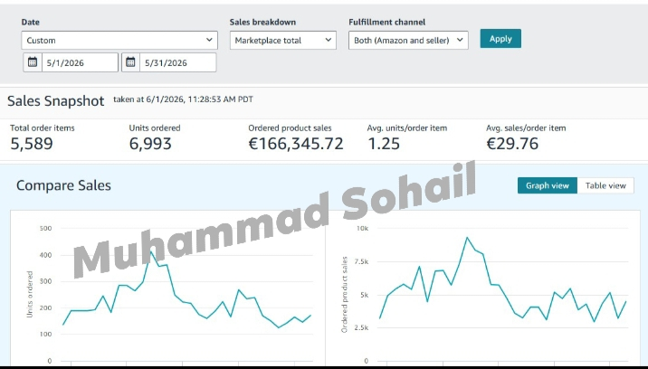

Achieving €166,345.72 in revenue within just 30 days highlights the strength of a well-executed Amazon Private Label strategy and a deep understanding of the Amazon Germany marketplace. During this period, the business successfully sold 6,993 units, demonstrating strong customer demand, effective product positioning, and a scalable growth model. These results were driven by a combination of strategic listing optimization, market analysis, inventory planning, and continuous performance monitoring. Every decision was backed by data to ensure that sales growth remained profitable and sustainable. By focusing on customer behavior and marketplace trends, the account was able to maximize visibility and improve conversion rates throughout the month. Operating a successful Amazon Private Label business requires more than simply generating sales. It demands consistent optimization, efficient account management, and a long-term approach to brand growth. Through careful execution and ongoing improvements, the business achieved strong performance while building a solid foundation for future expansion. This milestone reflects the importance of combining data-driven strategies with sustainable growth practices. With a proven system in place, the focus remains on scaling operations, increasing profitability, and creating long-term success in one of Europe's most competitive Amazon marketplaces.